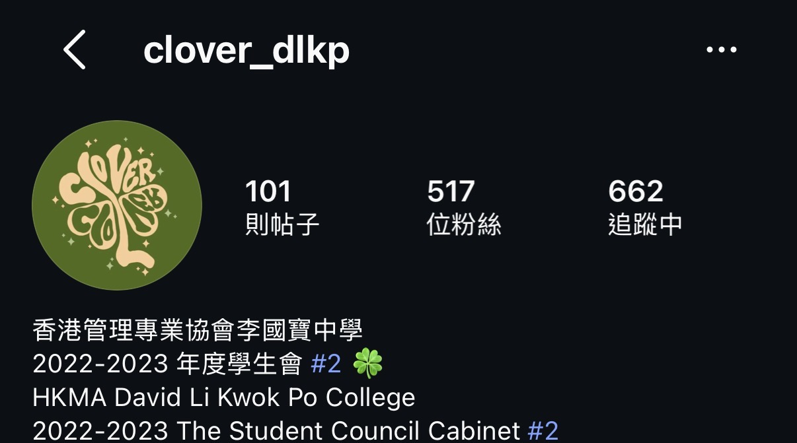
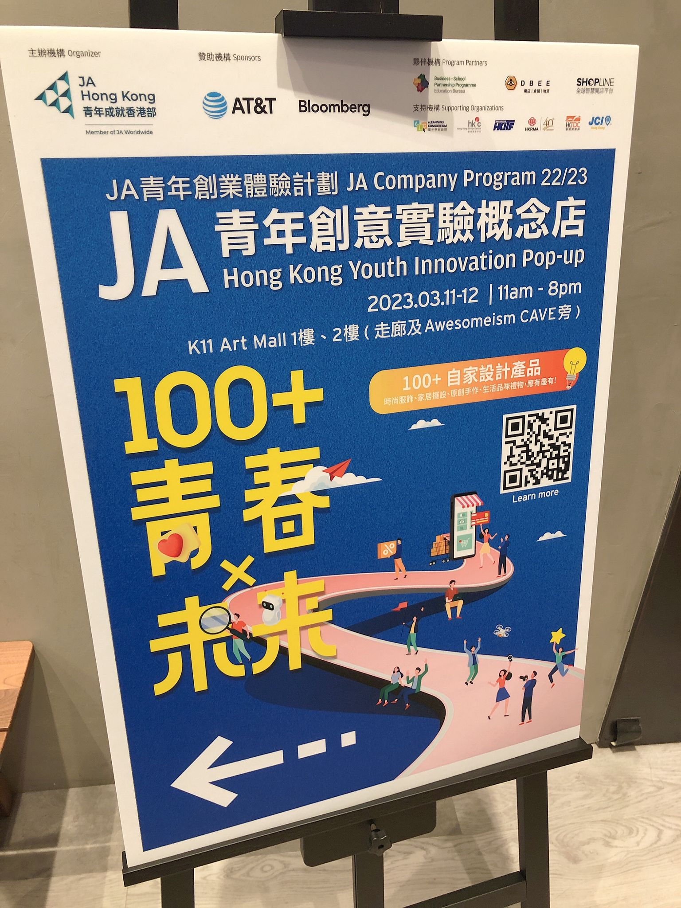
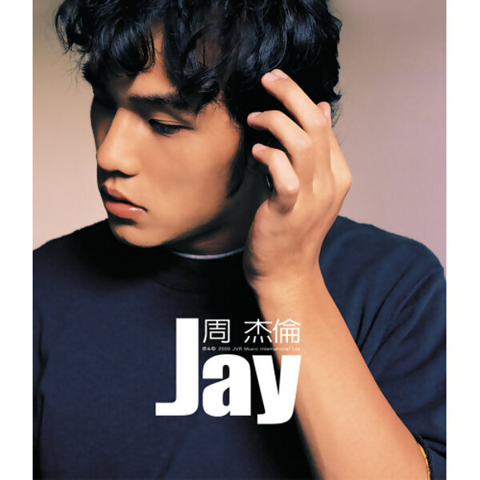
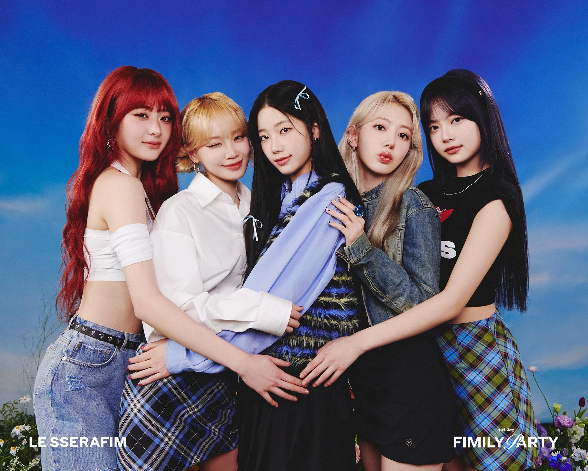
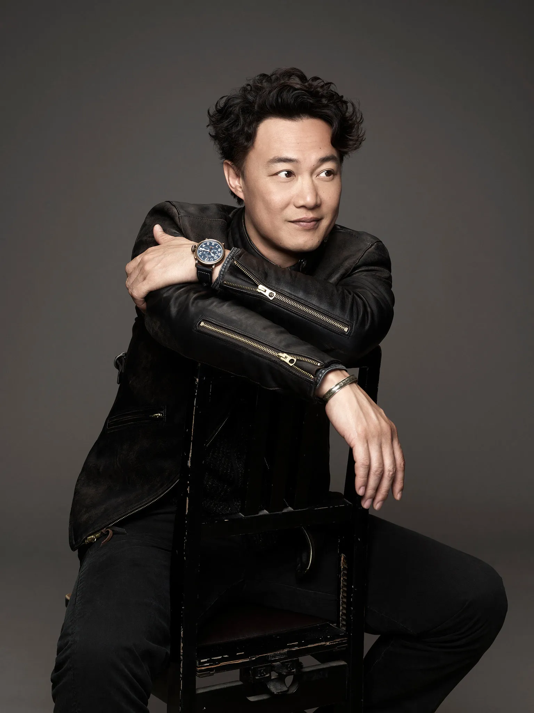

Secondary education
HKMA David Li Kwok College
My secondary school education background.
Hang Seng University · Professional Accountancy
Professional Accountancy Student Business & Numbers Enthusiast
Exploring accounting, business, economics, and the ideas behind the numbers.
A student learning to read the story behind every figure.
“I don’t just like numbers — I like understanding what they mean.”
01 / A little about me
My interest in accounting comes from a genuine curiosity about how financial figures tell a business story. I really enjoy looking at the relationships between different pieces of data and figuring out why things work the way they do.
I’m comfortable working with numbers, enjoy analysing information, and like learning how things work. I’m especially interested in how numbers connect to real businesses and everyday life.
Beyond just working with numbers, I like to turn complex information into clear and useful insights, helping to see the bigger picture.
02 / Where I’ve learned
Secondary education
My secondary school education background.
2024–2026
Associate Degree in Business Management
Current studies
Professional Accountancy
Developing knowledge in accounting and business, and exploring how financial information supports decisions.
03 / A milestone
Managed club operations, coordinated events, and led team activities to foster member engagement.
Handled administrative duties, documentation, and cross-departmental communication.

Participated in a youth entrepreneurship program, gaining hands-on experience in business operations and teamwork.
Participant
Participant
Participant

05 / Tools I use
06 / Beyond the classroom
Football, music, and the violin bring a different rhythm to my week.
I enjoy watching football and studying the tactics behind the game. I like how football combines strategy, passion, uncertainty, and unexpected moments.
In some ways, football is like life — we can prepare, but we can never completely predict what happens next.
A soundtrack for the day
I enjoy turning lyrics into scenes in my imagination, imagining what is happening in the story and what the characters are feeling or thinking.



I achieved ABRSM Grade 8 on the violin when I was 15 years old. Violin is one of my favourite ways to relax outside my studies.

07 / Get in touch
Interested in connecting or learning more about my academic journey? Feel free to get in touch.